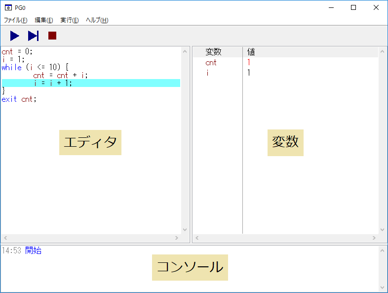
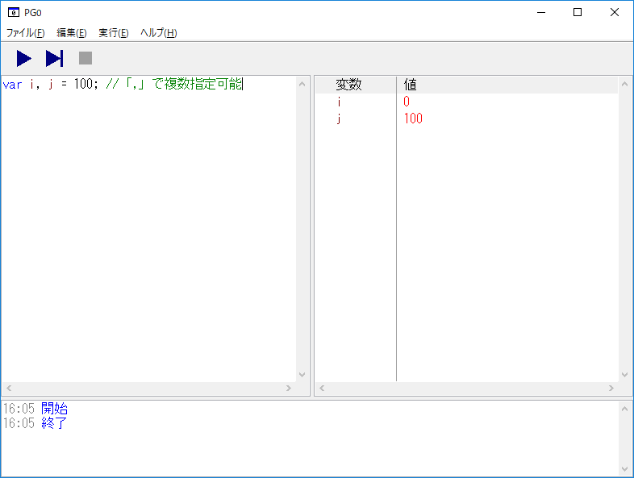
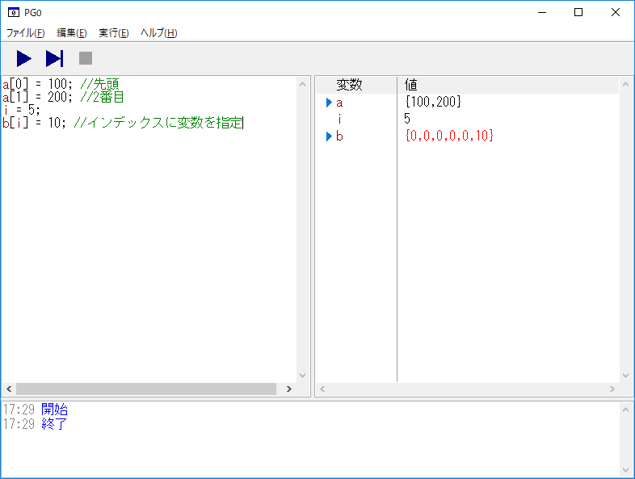
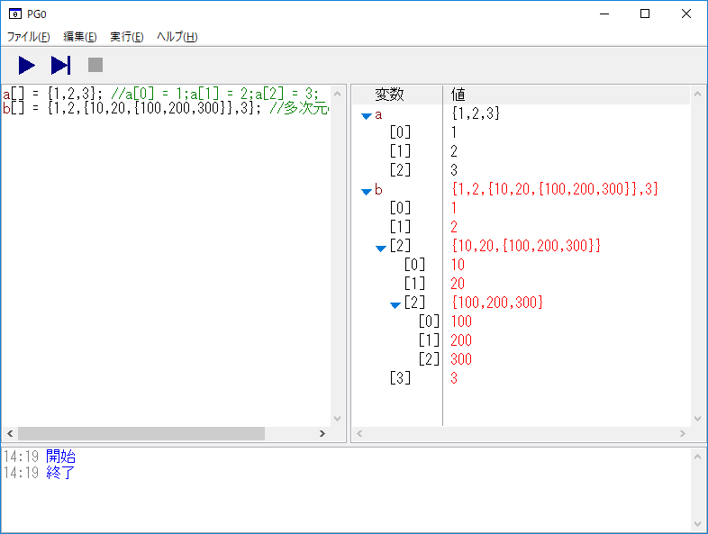
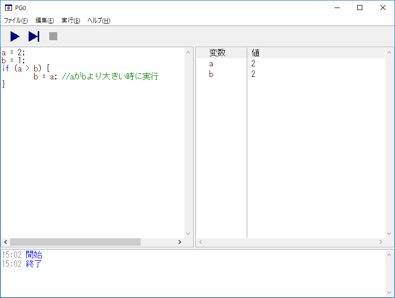
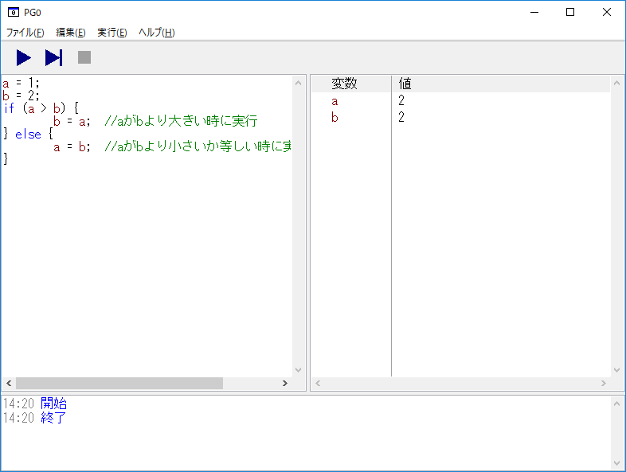
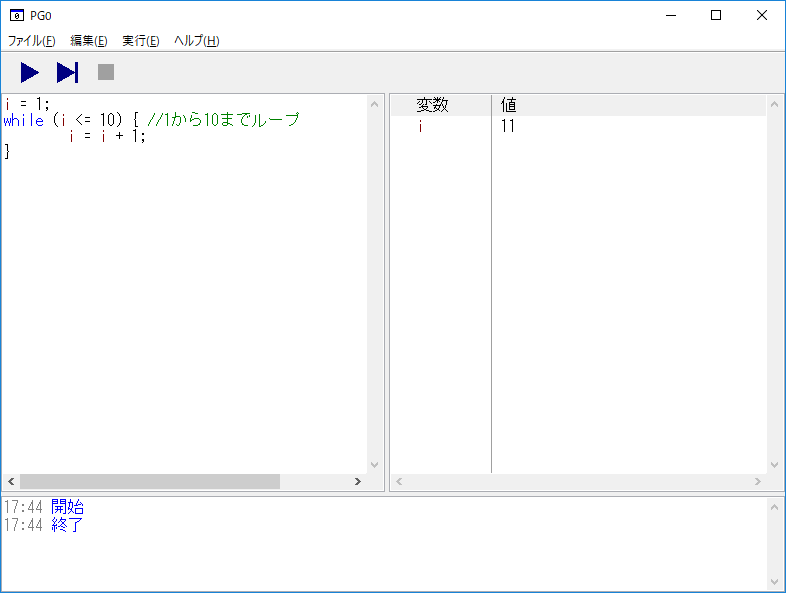
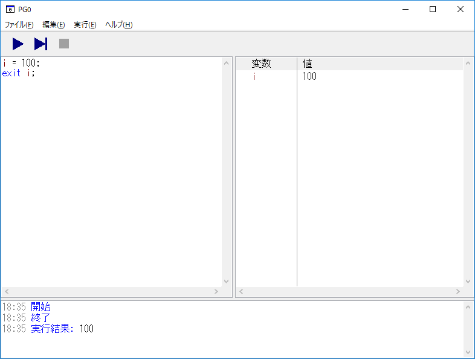

PG0 - チュートリアル
はじめに
プログラミング学習を目的としたプログラミング言語です。
プログラミングに最低限必要となる基本構造(順次、分岐、反復)の理解を目的としています。
そのため非常に割り切った言語仕様となっています。分岐や反復の方式は一種類ずつとし、扱える型は整数のみとしています。
このツールでプログラミングの基礎中の基礎を学び、一般的なプログラミング言語を学習する入口になると考えています。
PG0の使い方
PG0の実行画面

エディタ
プログラムを書く部分となります。
プログラム実行中は実行している行が水色になります。
プログラム実行中は編集することはできません。
変数
実行中の変数と変数の中の値を表示します。
実行している行により変更された値は赤くなります。
配列の場合は配列の中身を開閉表示することができます。
コンソール
実行に関する情報（実行、停止、終了）を表示します。
exitで変数や値を指定した場合はここに内容が表示されます。
プログラムにエラーがある場合はここに赤字で表示されます。
実行
エディタに書かれたプログラムを実行します。
ステップ実行
エディタに書かれたプログラムをステップ実行します。
ステップ実行は再度ステップ実行を選択すると次の行を実行します。
この機能を使うと一行ずつ実行することができます。
カーソル行まで実行
エディタにカーソルがある行までを実行します。
停止
実行中のプログラムを停止します。
実行速度
実行で動作するプログラムの速度を選択します。
速い - プログラムの実行中を画面上に表示せずに一気に実行します。
普通 - プログラムを一行ずつ自動実行します。
遅い - ゆっくり目にプログラムを一行ずつ自動実行します。
変数
変数は数値を代入するための入れ物です。
変数は使うときに用意されますが、var を使って変数を明示的に用意することもできます。
var i, j = 100;
上記をエディタに入力して実行した結果は以下になります。

配列
配列は変数を連続的に並べた入れ物です。
配列を扱うには変数の後に[]を指定します。
a[0] = 100;
a[1] = 200;
i = 5;
b[i] = 10;
上記をエディタに入力して実行した結果は以下になります。

配列の初期化を行うには {値1,値2,値3,...} を代入します。
a[] = {1,2,3};
b[] = {1,2,{10,20,{100,200,300}},3};
上記をエディタに入力して実行した結果は以下になります。

基本構造
順次
一つの文は「;」で区切って記述します。
文は上から順番に実行されます。
a = 1;
b = 2;
ブロックは {～} で括って複数の文をまとめて一つの文として扱います。
{
a = 1;
b = 2;
}
分岐
if
if文は条件により文の実行を制御します。
if (式)
文;
式の条件が一致する場合に文を実行し、一致しない場合は文を実行しません。
a = 2;
b = 1;
if (a > b) {
b = a;
}
上記をエディタに入力して実行した結果は以下になります。

else
if文で条件が一致しない場合の文を指定します。
if文で文が実行された場合はelse文に続く文は実行されません。
a = 1;
b = 2;
if (a > b) {
b = a;
} else {
a = b;
}
上記をエディタに入力して実行した結果は以下になります。

反復
while
while文は式によりループを行います。
while (式)
文;
式の結果が一致する間、文を実行し続けます。
i = 1;
while (i <= 10) {
i = i + 1;
}
上記をエディタに入力して実行した結果は以下になります。

その他
実行中のプログラムを終了する場合は exit を書きます。
exit;
exit には変数を設定でき、設定した変数の内容はコンソールに表示されます。
i = 100;
exit i;
上記をエディタに入力して実行した結果は以下になります。

サンプル
PG0用のサンプルプログラムです。PG0で実行する事ができます。
1_var.pg0
変数を使ったサンプルです。
a = 1;
b = 2;
c = a + b;
exit c;
2_array.pg0
配列を使ったサンプルです。
a[] = {1,2,3};
a[3] = 4;
b[] = {5,6,7};
c[] = a + b;
exit c;
3_if.pg0
if文を使ってうるう年を判定するサンプルです。
var year = 2018;
var leapYear;
if (year % 400 == 0 || (year % 4 == 0 && year % 100 != 0)) {
leapYear = 1;
} else {
leapYear = 0;
}
exit leapYear;
4_while.pg0
while文を使って1から10までの足し算をするサンプルです。
cnt = 0;
i = 1;
while (i <= 10) {
cnt = cnt + i;
i = i + 1;
}
exit cnt;
5_max.pg0
配列の中から最大の値を探すサンプルです。
num[] = {3,4,56,25,47,72,2,23,25,9};
size = 10;
max = num[0];
i = 1;
while (i < size - 1) {
if (max < num[i]) {
max = num[i];
}
i = i + 1;
}
exit max;
6_sort.pg0
配列の中身を小さい順に並べ替えるサンプルです。
num[] = {3,4,56,25,47,72,2,23,25,9};
size = 10;
i = 0;
while (i < size - 1) {
j = size - 1;
while (j > i) {
if (num[j - 1] > num[j]) {
tmp = num[j];
num[j] = num[j - 1];
num[j - 1] = tmp;
}
j = j - 1;
}
i = i + 1;
}
exit num;